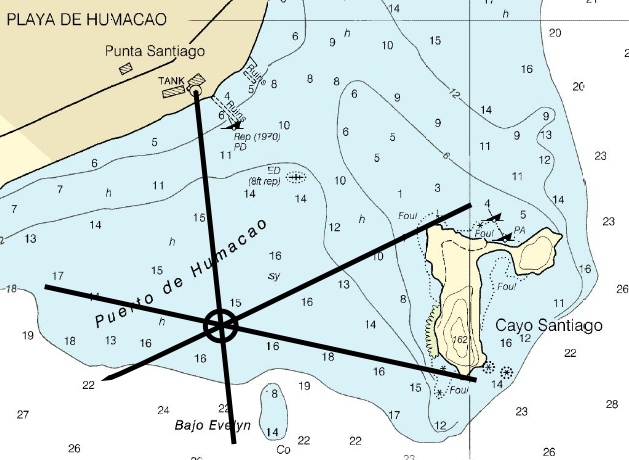
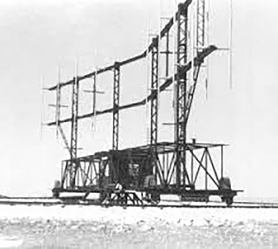
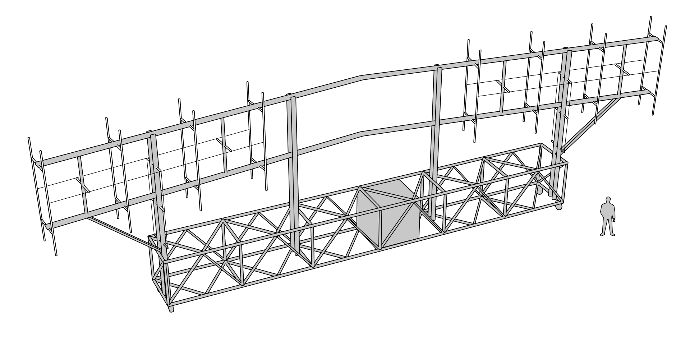
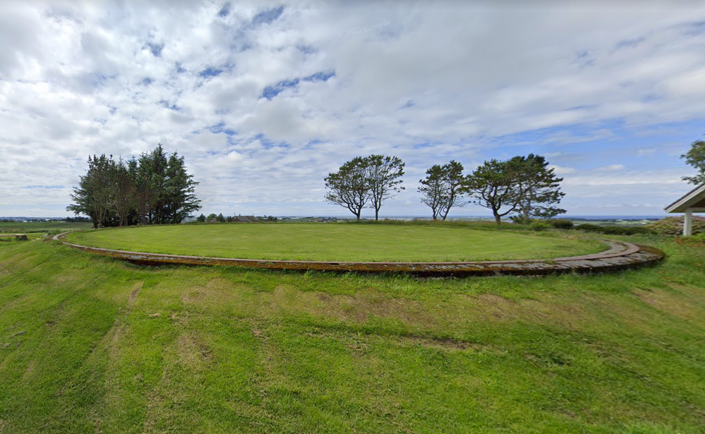
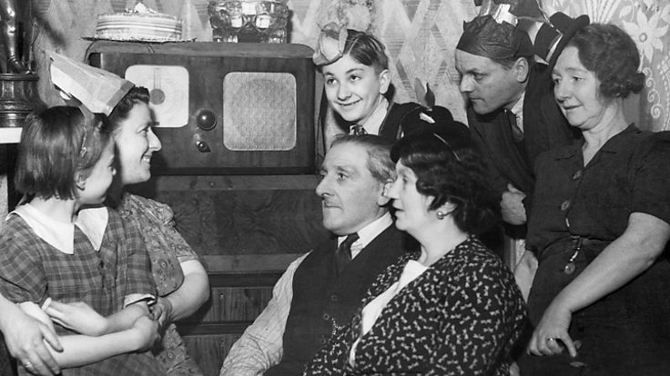

레이더 개발 이야기 (31) - 다리가 굽은 까마귀의 비상과 추락
게시: 2023-04-27T06:30:20+09:00
<굽은 다리의 까마귀> 당시 영국군은 이름까지는 모르고 있었으나, WW2 초기 루프트바페가 사용하던 전파 항법 시스템의 이름은 Knickebein (크니커바인, '굽은 다리'라는 뜻으로 북구 신화에 나오는 까마귀의 이름). 이 시스템은 31 MHz라는 당시로서는 꽤 높은 주파수의 전파를 커다란 야기(Yagi-Uda) 안테나를 이용하여 좁은 각도의 지향성 전파로 쏘는 것이 핵심. 하나의 source에서 발생시킨 전파를 두 대의 안테나로 duplexer switch를 통해 분기시켜 쏘았으므로, 하나의 시스템으로 통합하다보니 그 안테나 모양은 약간 굽은 형태를 띠게 되었음. 또한 앞서 설명한 사정거리 50km 정도의 Lorentz 시스템을 거의 그대로 형상만 커다랗게 하여 사정거리를 늘린 것이다보니, 안테나가 엄청나게 커졌음. 그러나 기억하다시피 로렌츠 시스템은 항공기의 경로를 유도할 수 있을 뿐, 활주로 같은 특정 위치로부터의 거리를 항공기에게 알려줄 방법은 전혀 없었음. 따라서 단지 크니커바인 하나만 가지고는 폭격기 조종사에게 런던까지 가는 길은 알려줄 수 있어도, 지금이 런던 상공이니 빨리 폭탄을 투하하라는 것은 알려줄 방법이 없었음. 그러나 원래 폭격기의 항법 기술은 뱃사람들의 항법 기술을 그대로 가져온 것. 뱃사람들도 로렌츠 시스템 비슷한 것이 있었음. 바로 등대. 등대의 불빛은 어두운 밤 해안가를 지나가는 선박에게 고마운 존재이지만 등대 하나만으로는 등대의 방향을 알 수 있을 뿐 등대까지의 거리를 알 수 없었고, 따라서 그 선박의 정확한 위치도 알 수 없었음. 그러나 충분히 떨어진 거리에 등대가 하나 더 있다면? 나침반을 통해 자북(magnetic north)과 1번 등대와의 각도를 측정하고, 이어서 자북과 2번 등대와의 각도를 측정한 뒤, 지도에서 그 2개 등대와 그 각도로 이어지는 선 2개를 그어 보면 그 선이 만나는 곳이 바로 자신의 위치. 이걸 postion fix 라고 함. 바로 이 원리를 반대로 이용하면 지향성 전파를 이용하여 폭격기에게 런던 시청이나 맨체스터 홈구장의 위치를 정확하게 알려줄 수 있는 것. 즉, 크니커바인 2대를 멀찍이 떨어진 곳에 설치하고 원하는 곳 위에서 서로 그 전파 beam이 겹치도록 하면 됨.

(나침반이 있는 선박에서 등대든 자연적인 곶이든 해도상의 목표물에서 2곳의 각도를 측정할 수 있다면 그 선박의 위치를 정할 수 있다는 position fix의 원리를 보여주는 그림. 여기서는 2곳이 아니라 3곳을 찍었는데, 그게 더 일반적. 왜 굳이 3곳을 찍을까? 사람이 눈으로 측정하는 것이고 선박을 계속 약간씩 물 위에서 흔들리므로 오차가 발생할 수 밖에 없는데, 세 목표물의 각도를 측정하면 세 개의 선은 당연히 하나의 점으로 수렴되지는 않고 약간씩 어긋나는 삼각형을 그리게 됨. 그 것이 실질적인 오차를 포함하는 그 선박의 위치임.)

(최초의 크니커바인 시스템의 위치. 처음에는 이렇게 클렙과 스톨베르크 딱 2곳에만 있었으므로 한번에 한 편대의 폭격기만 유도가 가능. 나중에는 프랑스 해안과 노르웨이 해안에도 많이 세웠음. 물론 이게 가능하려면 정확한 지도가 필요. 그래서 모든 지도는 군사적으로 사용될 가능성이 있는 것임.)

(크니커바인 실제 모습)

(크니커바인의 안테나 모습. 옆에 크기 비교를 위해 성인남자 모습이 그려져 있음.)
다만, 전파 beam이 겹친다고 허공에서 네온 사인이 켜지는 것도 아닌데 폭격기 조종사는 그 겹치는 지점을 어떻게 알 수 있을까? 그것도 간단함. 1번 크니커바인에서 쏘는 전파를 따라 폭격기가 날 때, 조종사가 라디오를 31 MHz에 맞추놓고 날면 헤드폰에서 계속 뚜~, 뚜~, 뚜~하는 식의 소리가 들림. 이 소리가 안 들리면 항로에서 벗어난 거임. 이때, 2번 크니커바인의 펄스를 1번 것과 정밀하게 동기화하여, 뚜~ 하는 소리가 멈춘 동안만 정확하게 뚜~ 소리가 나도록 펄스를 쏘면 됨. 그렇게 하면 1번 beam을 타고 날던 조종사의 헤드폰에 계속 뚜~, 뚜~ 하고 들리던 소리가 어느 순간 갑자기 끊김 없이 그냥 뚜~~~~~~~~하고 이어진 소리가 들리는 순간이 오는데 그게 바로 2번 beam과 만나는 순간임. 조종사는 그때 폭탄을 투하하면 됨. 이 굽은 다리의 까마귀를 로열 에어포스는 어떻게 막을 수 있었을까?

(노르웨이 해안의 크니커바인 설치했던 장소. 엄청난 크기의 원형 토대가 지금도 유럽 곳곳에 남아 있다고.)
<월척이네 월척!> 크니커바인에 대해 '두통'(headache)라고 코드명을 지어놓고 그 대응책이 될 코드명 '아스피린'을 고심하던 로열 에어포스는 그 대응책이 별로 어렵지 않다는 것을 금방 깨달음. 일단 독일놈들은 머나먼 독일에서 전파를 지향성으로 모아서 영국까지 닿게 하느라 죽을 힘을 다했지만 영국에서는 지향성 전파를 쏠 필요도 없고 멀리까지 쏠 필요도 없었음. 그야말로 전파전(나중에 실제로 'battle of beams'라고 이 싸움을 불렀음)에 있어서는 X개도 안방에서는 50% 이상 먹고 들어간다는 말이 딱 맞는 케이스. 게다가 당시 라디오는 꽤 흔한 물건이어서 지역마다 크건 작건 라디오 방송국이 있었음. 그러니 그 지역 라디오 방송국에서 폭격이 있을 때 즈음해서 31 MHz, 즉 크니커바인 전파의 주파수대로 뚜~, 뚜~, 뚜~ 신호 펄스를 사방에 뿌리기만 하면 됨.

(1944년 크리스마스 날, 온 가족이 모여 앉아 BBC 라디오를 듣는 모습)
다만 이게 성공하려면 크니커바인 전파가 그날 밤 어디를 향할 것인지 미리 알아야 했는데, 루프트바페 놈들은 신중한 건지 게으른 것인지 또는 아무 생각이 없는지 밤 11시에 폭격이 있으면 그날 해가 중천에 떠있을 때부터 미리 크니커바인 전파를 쏘기 시작함. 그러니 로열 에어포스는 낮부터 미제 아마추어 전파 수신기를 장착한 Avro Anson 폭격기로 영국 주요 도시 상공을 순찰, '오늘 밤에는 이 놈들이 어디로 날아오려나' 하면서 크니커바인 전파를 찾기만 하면 되었음. 처음에는 영국 라디오 방송국에서 나오는 전파는 크니커바인의 전파와 (당연히) 동기화가 되어 있지 않으니 루프트바페 폭격기 조종사들은 뚜,뚜~, 뚜,뚜~ 하는 식으로 두 개의 점(dot) 신호가 겹쳐 들려 혼란을 겪었음. 어느 뚜~ 신호가 진짜 크니커바인 신호인지 쉽게 구분할 수 없으니 전파 방해를 받고 있다는 사실은 알 수 있었으나 정확한 항로를 잡기가 어려웠음. 그런데 나중에는 영국 라디오 방송국에서 보내는 방해 전파를 크니커바인의 전파와 완전히 동기화 시켜 보냈으므로 목표물 근처에 가면 어디를 가더라도 뚜~, 뚜~ 신호가 들렸음. 즉, 항로가 빗나가더라도 지금 자기가 전파 방해를 받고 있는지 안 받고 있는지 자체를 알 수가 없게 됨. 결과적으로 크니커바인 시스템에 의해 유도되던 폭격기들은 대부분 목표물 상공에 도달하지 못함. 나중에는 2번째 크니커바인 beam의 뚜~, 뚜~ 신호를 모방하기도 하여, 엉뚱한 곳에 폭탄을 투하하도록 유도를 하기도 했음. 그런데 그게 끝이 아님. 제일 나빴던 것은, 크니커바인 유도에 익숙해져 모든 것을 거기에 의존하던 루프트바페 폭격기 조종사들은 당연히 돌아가는 길도 크니커바인에 의존하고 있었다는 것임. 그러니까 일단 목표물 근처에 가서 영국의 가짜 신호에 홀리게 되면, 폭격이 문제가 아니라 기지로 돌아갈 길까지 잃어버림. 이 때문에 상당수의 루프트바페 폭격기가 자기 기지로 돌아가지 못하고 엉뚱한 곳에 연료 부족으로 불시착. 심지어 어떤 루프트바페 폭격기는 로열 에어포스 기지에 착륙을 해놓고 거기가 독일이 아니라 영국이라는 것을 알고는 당황하더라는 믿지 못할 이야기도 있음.